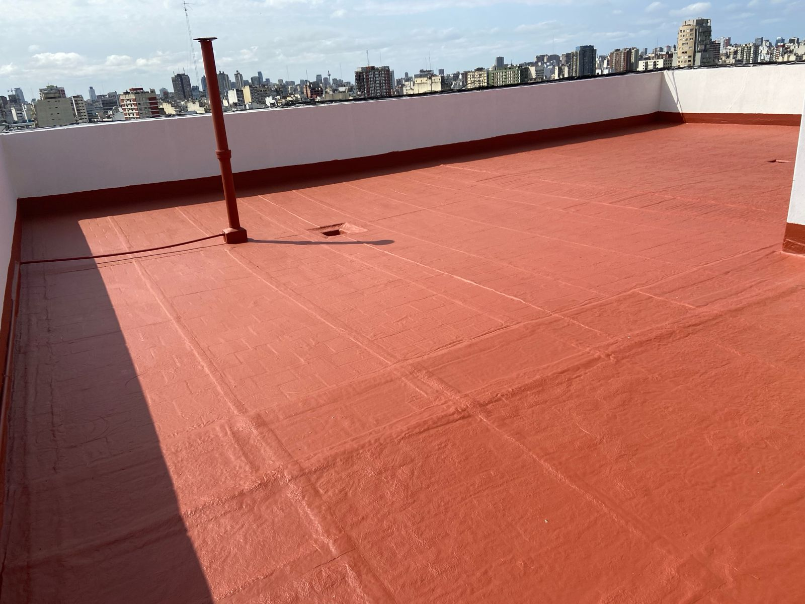

Jujuy 110



 Ir al contenido
Ir al contenido
Araoz 2450
Palermo, CABA
+54 9 (11) 5183-9686
hv.obrasyservicios@gmail.com
HV OBRAS & SERVICIOS / TRABAJOS REALIZADOS
Cada obra, una transformación.
Conocé el proceso y el resultado final de nuestros trabajos en terrazas.

HABLEMOS DE TU EDIFICIO
Araoz 2450
Palermo, CABA, Argentina
Teléfono: +54 9 (11) 5183-9686
Email: hv.obrasyservicios@gmail.com